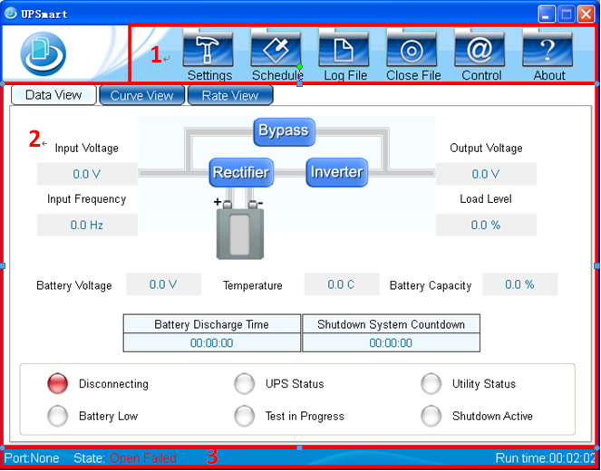

Will appear after entering UPSmart main interface is as follows:

Figure1: UPSmart main interface
1. Function select area
After installation is complete, you can begin to set parameter
values for each function. Each parameter value will affect the
UPSmart program is functioning properly, the parameter settings
for each sequence in the introductory chapter.
2. UPS status display area
After UPSmart is properly connected to the UPS, the relevant
information will be displayed in this area, the user can choose
to flow graphs, curves, stopwatch and other ways to display the
contents of the display contains the input voltage, output voltage,
frequency, battery capacity , load, temperature, ... and so forth.
3. Software status area
The region can significantly UPS serial connection number, serial
connection status, connection status messaging module, system uptime,
and so forth.